Imre Sándor
Imre Sándor Ladányi Gedeon
Ladányi Gedeon- Szamosi János
- Szász Béla
 Finaly Henrik
Finaly Henrik Hóman Ottó
Hóman Ottó Hóman Ottó
Hóman Ottó- Szász Béla
- 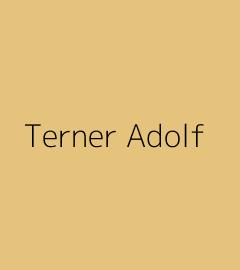Terner Adolf
- Szabó Károly
 Felméri Lajos
Felméri Lajos- 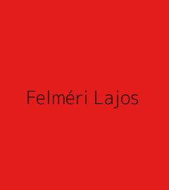Felméri Lajos
 Hómao Ottó
Hómao Ottó Szamosi János
Szamosi János- Szász Béla
 Hegedűs István
Hegedűs István- Meltzl Hugó
 Hegedűs István
Hegedűs István- 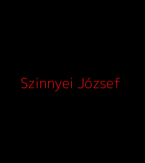Szinnyei József
- Schilling Lajos
 Moldován Gergely
Moldován Gergely Széchy Károly
Széchy Károly Pecz Vilmos
Pecz Vilmos Szádeczky Lajos
Szádeczky Lajos Márki Sándor
Márki Sándor Halász Ignác
Halász Ignác Schneller István
Schneller István- Haraszti Gyula
 Csengery János
Csengery János- Böhm Károly
 Moldován Gergely
Moldován Gergely Vajda Gyula
Vajda Gyula Posta Béla
Posta Béla- Schilling Lajos
 Szádeczky Lajos
Szádeczky Lajos Márki Sándor
Márki Sándor Schneller István
Schneller István Haraszti Gyula
Haraszti Gyula- Posta Béla
 Cholnoky Jenő
Cholnoky Jenő- 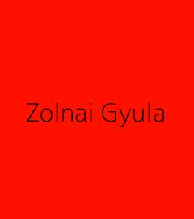Zolnai Gyula
- Dézsi Lajos
 Schmidt Henrik
Schmidt Henrik- Schmidt Henrik
 Erdélyi László
Erdélyi László Hornyánszky Gyula
Hornyánszky Gyula  Moldován Gergely
Moldován Gergely- Csengery János
 Dézsi Lajos
Dézsi Lajos Schmidt Henrik
Schmidt Henrik- Erdélyi László
- Hornyánszky Gyula és Bartók György
 Bartók György
Bartók György- 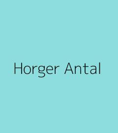Horger Antal
 Mészöly Gedeon
Mészöly Gedeon- Kogutowicz Károly
 Huszti József
Huszti József Buday Árpád
Buday Árpád Imre Sándor
Imre Sándor Schmidt Henrik
Schmidt Henrik Fógel József
Fógel József Zolnai Béla
Zolnai Béla Várkonyi Hildebrand (Dezső)
Várkonyi Hildebrand (Dezső)- 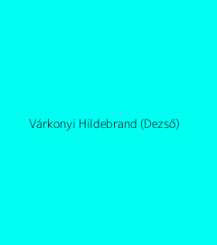Várkonyi Hildebrand (Dezső)
 Mester János
Mester János- Várady Imre
- Banner János
- Halasy-Nagy József
- 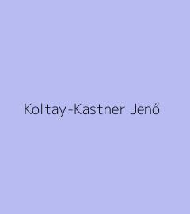Koltay-Kastner Jenő
 Tóth László
Tóth László- 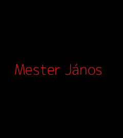Mester János
 Birkás Géza
Birkás Géza Prinz Gyula
Prinz Gyula Mészöly Gedeon
Mészöly Gedeon Tettamanti Béla
Tettamanti Béla Baróti Dezső
Baróti Dezső Baróti Dezső
Baróti Dezső Nyíri Antal
Nyíri Antal- 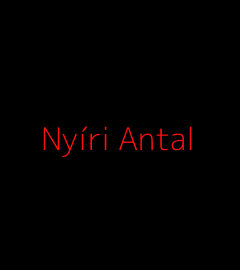Nyíri Antal
- 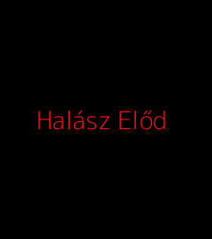Halász Előd
 Halász Előd
Halász Előd Halász Előd
Halász Előd- 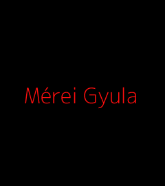Mérei Gyula
 Mérei Gyula
Mérei Gyula Mérei Gyula
Mérei Gyula Mérei Gyula
Mérei Gyula Szauder József
Szauder József Halász Előd
Halász Előd Halász Előd
Halász Előd Halász Előd
Halász Előd Halász Előd
Halász Előd- Kalocsai Dezső
- Kalocsai Dezső
 Kalocsai Dezső
Kalocsai Dezső Hajdú Péter
Hajdú Péter Hajdú Péter
Hajdú Péter Csukás István
Csukás István Csukás István
Csukás István Csukás István
Csukás István Csukás István
Csukás István Csukás István
Csukás István Csukás István
Csukás István Serfőző Lajos
Serfőző Lajos Serfőző Lajos
Serfőző Lajos Serfőző Lajos
Serfőző Lajos Serfőző Lajos
Serfőző Lajos Mikola Tibor
Mikola Tibor Mikola Tibor
Mikola Tibor Mikola Tibor
Mikola Tibor Kristó Gyula
Kristó Gyula- Kristó Gyula
- Kristó Gyula
 Mikola Tibor
Mikola Tibor Mikola Tibor
Mikola Tibor- Pál József
 Pál József
Pál József Bernáth Árpád
Bernáth Árpád Berta Árpád
Berta Árpád- 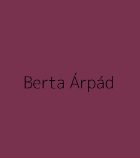Berta Árpád
 Berta Árpád
Berta Árpád Berta Árpád
Berta Árpád Berta Árpád
Berta Árpád Berta Árpád
Berta Árpád- 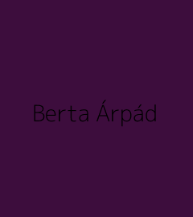Berta Árpád
 Almási Tibor
Almási Tibor Almási Tibor
Almási Tibor Almási Tibor
Almási Tibor Csernus Sándor
Csernus Sándor Gyenge Zoltán
Gyenge Zoltán
 Kristály Gyógyszertár
Kristály Gyógyszertár Alma Gyógyszertár
Alma Gyógyszertár Csanádi Patika
Csanádi Patika Dóm Patika
Dóm Patika Vasas Szent Péter Gyógyszertár
Vasas Szent Péter Gyógyszertár BENU Dr. Kaiser Gyógyszertár
BENU Dr. Kaiser Gyógyszertár Pingvin Patika
Pingvin Patika Kabay Patika
Kabay Patika Kígyó Patika
Kígyó Patika Bartók Gyógyszertár (Bartók Patika Bt.)
Bartók Gyógyszertár (Bartók Patika Bt.) Citrus Patika
Citrus Patika Pingvin Patika | Kereszttöltés utcai gyógyszertár
Pingvin Patika | Kereszttöltés utcai gyógyszertár BENU Árkád Gyógyszertár
BENU Árkád Gyógyszertár Boldogasszony Gyógyszertár
Boldogasszony Gyógyszertár Pingvin Patika | Szolgáltató sori gyógyszertár
Pingvin Patika | Szolgáltató sori gyógyszertár Pingvin Patika | Csongrádi sugárúti gyógyszertár
Pingvin Patika | Csongrádi sugárúti gyógyszertár Kálvária Gyógyszertár
Kálvária Gyógyszertár Arany Oroszlán Gyógyszertár
Arany Oroszlán Gyógyszertár Pingvin Patika | Budapesti körúti gyógyszertár
Pingvin Patika | Budapesti körúti gyógyszertár Hárs Patika
Hárs Patika-
BTK dékán év
- Imre Sándor 1878/1879
- Szabó Károly 1882/1883
- Szász Béla 1890/1891
- Meltzl Hugó 1894/1895
- Schilling Lajos 1902/1903
- Moldován Gergely 1906/1907
- Szádeczky Lajos 1910/1911
- Márki Sándor 1914/1915
- Schneller István 1918/1919
- Csengery János 1924/1925
- Dézsi Lajos 1928/1929s
- Schmidt Henrik 1932/1933
- Erdélyi László Gyula 1936/1937
- Kogutowicz Károly 1941/1942
- Tóth László 1946/1947
- Baróti Dezső 1955/1956
- Kristó Gyula 1982/1983